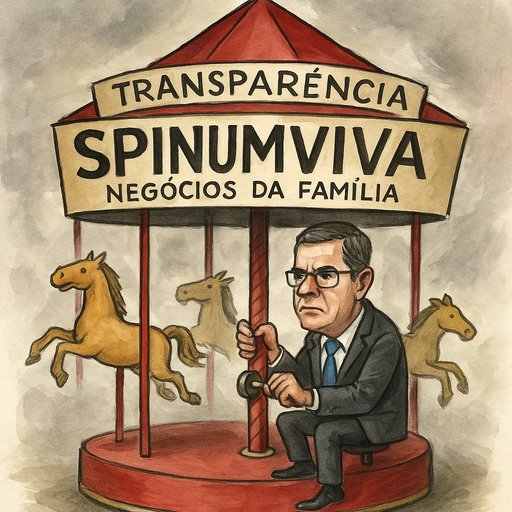

Publicado em 2025-06-30 17:26:38
Crónica satírica com selo nacional e rasto de névoa
Diz o povo que quem não deve não teme. Mas no reino dos negócios de família, essa máxima é apenas decorativa — uma espécie de rendilhado moral para pendurar na parede da sala ao lado da certidão de constituição de uma empresa “ativa mas discreta”.
Eis que surge a nossa protagonista: Spinumviva, um nome que evoca juventude, vigor… e o misterioso poder de existir sem que ninguém saiba ao certo o que faz. Segundo consta, o senhor primeiro-ministro — que, por pudor ou por estratégia, delegou o negócio nos filhos — viu-se agora incomodado com perguntas inoportunas da Entidade da Transparência.
Sim, essa entidade que, contra todas as probabilidades, decidiu... fazer o seu trabalho.
E qual foi a resposta do chefe do Governo?
Nada de conferências de imprensa, esclarecimentos ou documentos de atividade. Não senhor. O destino foi outro: uma visita ao Tribunal Constitucional, como quem diz “Vai tu, que eu já cá volto depois do verão.”
O caso da Spinumviva não é um escândalo. É uma sinfonia orquestrada com flautas de papel timbrado, violinos de relatório por entregar e um tambor surdo de silêncio oficial.
A empresa, dizem, tem filhos à frente — como se isso fosse um certificado de pureza virginal — mas curiosamente não tem memória de atividade, nem folhas de Excel visíveis, nem sequer aquele PowerPoint de 2017 com “Missão, Visão e Valores”.
Fala-se em ética, em escrutínio, em governação aberta. Mas na realidade portuguesa, tudo isso cabe num envelope — desde que bem fechado e enviado em nome de um qualquer advogado com assinatura digital.
Enquanto isso, o povo observa. Uns, resignados, dizem “São todos iguais”. Outros, mais atentos, murmuram: “Mas esta empresa vive de quê? Ar?”
E a resposta, claro, não vem. Porque até o ar — em Portugal — paga imposto.
Autor : Augustus Veritas in Fragmentos de Caos